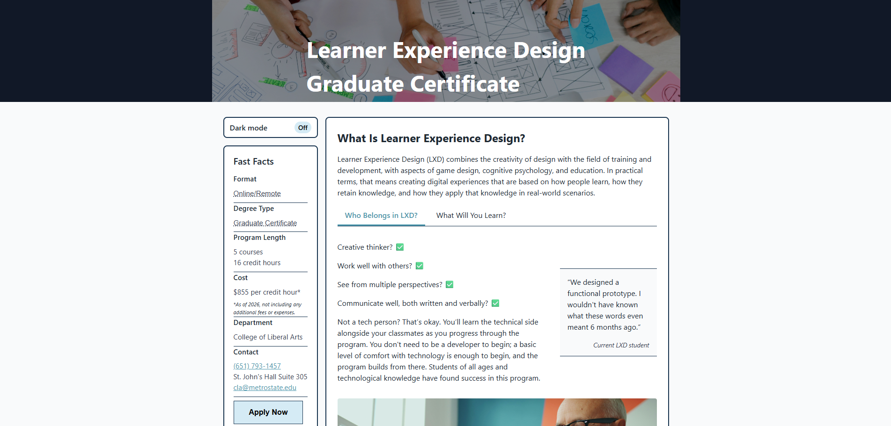

GNU Image Manipulation Program

An open-source alternative to Adobe Photoshop.
Scribus
An open-source alternative to Adobe InDesign.
Figma
A web-based design tool for UI/UX and graphic design.
Canva
A web-based design tool for creating graphics, presentations, and social media content.
HTML/CSS
The foundational languages for web development, used to structure and style web pages.